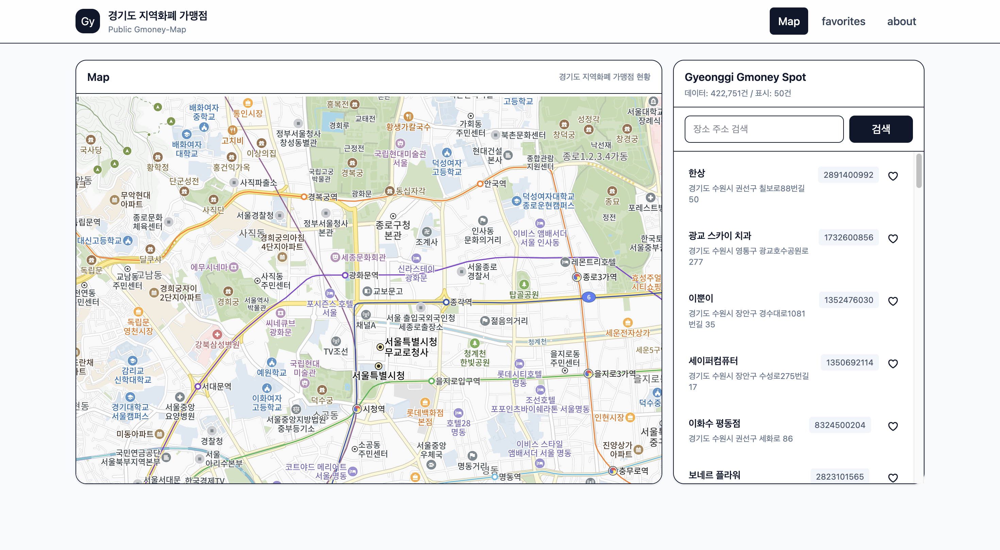
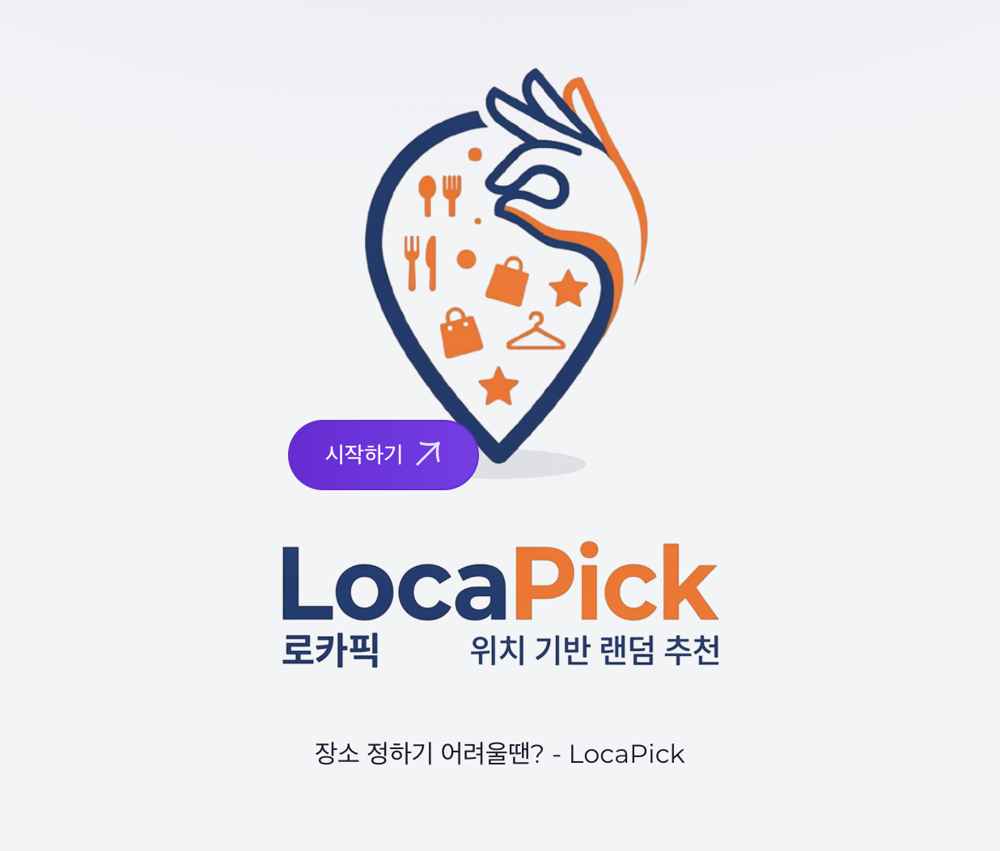

02 — Tech Stack
코드를 쓰는 것 이상으로,
운영하고 배포하는 과정까지 이해합니다.
03 — Featured Projects
문제 정의 → 기술적 해결 →
실제 결과로 정리한 프로젝트들입니다.

Project 02
Figma로 직접 설계하고 코드로 구현한 브랜드 반응형 웹사이트. 전체 코드의 66%가 SCSS인 만큼 픽셀 단위 레이아웃 정밀도와 모든 뷰포트 대응에 집중했습니다.
🎨 Design
Figma로 UI/UX 직접 설계 후 React + SCSS로 1:1 구현
📐 Responsive
모바일·태블릿·데스크탑 전 구간 완벽 반응형 처리
🚀 Deploy
Vercel 배포 · 실서비스 수준의 완성도 확보
Desktop · Tablet · Mobile
Project 03
단순 CRUD를 넘어 Docker 볼륨 설정으로 데이터 무결성을 확보하고, 1:1 채팅·사진 편집 기능까지 구현한 풀스택 프로젝트.

Project 05
3개의 API(Kakao, Tmap, ODsay)를 하나의 인터페이스에서 통합하고,
JWT를 활용한 Stateless 인증 시스템을 구축하여 보안성을 확보하고,
다차원 정렬(리뷰 점수, 사용자 평점 등)을 통해 최적의 장소를 추천하는
'LocaPick 알고리즘'을 구현
🔴 Problem
초기에 정적 데이터 (JSON) 방식에서 발생하던 데이터의 한계와 연산 부하 문제를 인식
🔵 Solution
카카오 API와 백엔드 연산 로직을 결합한 하이브리드 아키텍처로 고도화
🟢 Result
빠른 로딩시간과 가볍고 성능좋은 웹사이트면서 동시에 장소 추천 알고리즘 구현에 성공
04 — Infrastructure
서비스를 배포하고 유지하는
인프라 레이어까지 직접 다룹니다.
Synology와 UGREEN NAS 2대를 동시 운영. SMB 멀티채널 설정과 포트 포워딩으로 안정적인 외부 접속 환경을 직접 구축했습니다.
Immich(개인 사진 클라우드)를 Docker로 직접 구축해 운영 중. 24시간 게임 서버(Minecraft, SCP)도 컨테이너로 관리합니다.
05 — Archive
타이머 앱
React · useState
날씨 알림
React · OpenWeather API
TodoList
React · Context API
끝말잇기 게임
JavaScript · DOM
UniTrade
JSP · MariaDB
LocaPick
MultiPle API · Spring Backend
Figma UI 작업
Figma · UI/UX
06 — About & Contact
안녕하세요, 김재아입니다. 단순히 작동하는 코드를 넘어, 왜 그렇게 동작하는가를 끊임없이 물어보는 개발자입니다.
개발 공부를 하면서 코드만 짜는 것에 그치지 않고, Docker로 환경을 구축하고, NAS로 서버를 운영하며 실제 서비스가 어떻게 돌아가는지 직접 경험해왔습니다.
공공 데이터 API의 성능 문제를 발견했을 때 Python 스크립트를 직접 작성해 해결한 것처럼, 문제 앞에서 도구를 가리지 않습니다.
디자이너와도 원활하게 소통할 수 있는 Figma 활용 능력과 반응형 UI 구현 경험을 갖추고 있으며, 계속해서 만들고 부수며 성장 중입니다.